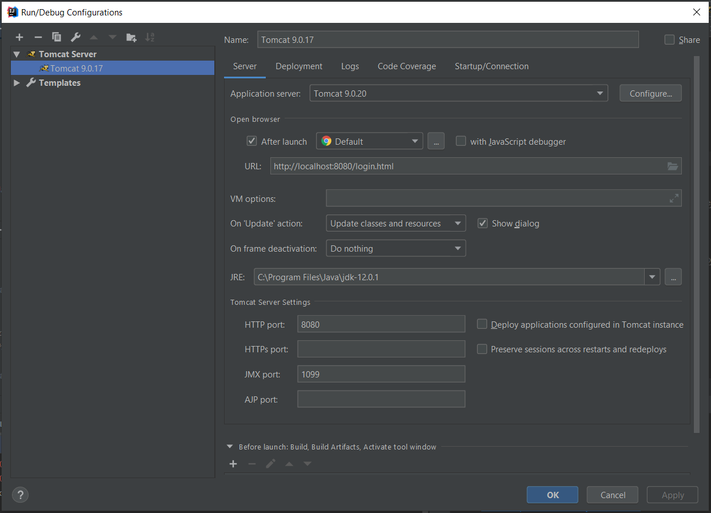
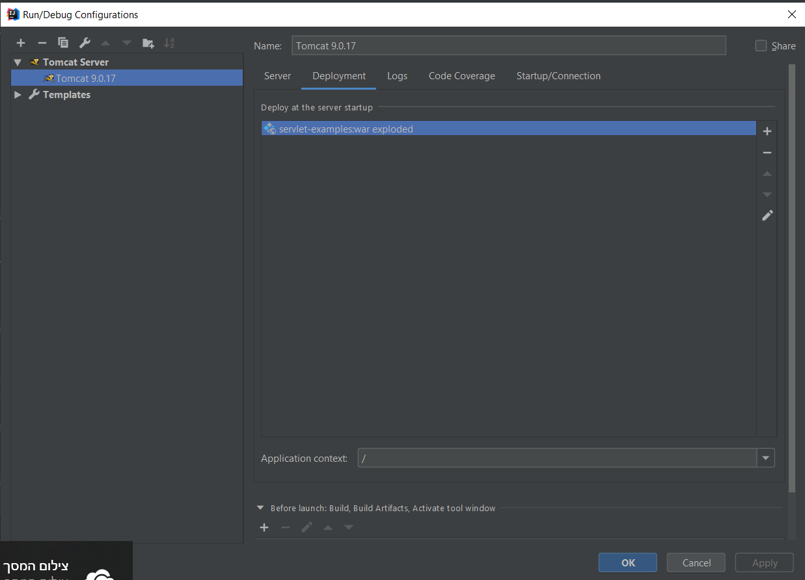

e-mail: igor.morozov705@gmail.com
Author: Igor Morozov, ID 332562123.
Exercise #3 "Website/Servlets".
This program includes servlets: "LoginServlet", "Chat",
"MessageResponse", "SecurityCheck" and "Welcome".
"LoginServlet": includes page "login.html" - first page of this web-application. It requires input name of user, saves it in a session and redirects to servlet "Chat".
In case of empty input of name the servlet reports "Missing name" and returns to "login.html".
"Chat": this servlet includes page "chat.html", get the name of the user from a session in order to welcome him. In the method "doPost" the servlet add new message to string of previous messages and saves it in ServletContext.
"SecurityCheck": checks if name of user is existing in a session. In case if yes - allowed for user is "null" in session - returns him to "login.html.
"MessageResponse": returns from ServletContext to "chat.html" a string with previous messages. it is called from "chat.html"
"Welcome" : this servlet is called from "chat.html" and prints string "Welcome " and name of connected user. This name this servlet takes from session.
Also this web-application includes next html-pages: "login", "chat", "readme" and 2 pages "login1" and "login2" that construct screen with message 'Missing name" (in case if user did not input his name).
Configuration:
 